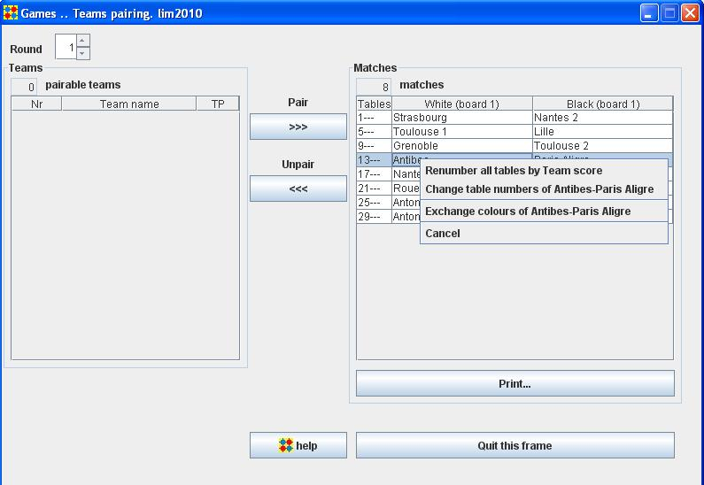

Team Pairings frame
With the Team Pairings frame, you can manually pair teams.
Pair 2 teams
Select the teams and click the "Pair" button.

Each player of each board of one team is paired with the player of the corresponding board of the other team.
Modify one or several matches

To renumber all tables, right-click in the Matches panel and choose the "Renumber all tables by Team score" menu item.
To change table numbers of a given match, right-click on the match in the Matches panel and choose the "Change table numbers of ..." menu item.
To change colours of all games of a given match, right-click on the match in the Matches panel and choose the "Change table numbers of ..." menu item.
Other modifications
To modify individual games, use the Games Pair frame